|
Лекция 43.
| |||||||||||||||||||||||||||||||||||||||||||||||||||||||||||||||||||||||||||||||||||||||||||||||||||||||||||||||||||||||||||||||||||||||||||||||||||||||||||||||||||||||||||||||||||||||||||||||||||||||||||||||||||||||||||||||||||||||||||||||||||||||
| Пример | X1 (температура) |
X2 (вибрация) |
X3 (порог) |
Y (опасность) |
|---|---|---|---|---|
| 1 | 1 | 1 | 1 | 1 (безопасно) |
| 2 | 9.4 | 6.4 | 1 | -1 (опасно) |
| 3 | 2.5 | 2.1 | 1 | 1 |
| 4 | 8.0 | 7.7 | 1 | -1 |
| 5 | 0.5 | 2.2 | 1 | 1 |
| 6 | 7.9 | 8.4 | 1 | -1 |
| 7 | 7.0 | 7.0 | 1 | -1 |
| 8 | 2.8 | 0.8 | 1 | 1 |
| 9 | 1.2 | 3.0 | 1 | 1 |
| 10 | 7.8 | 6.1 | 1 | -1 |
С помощью дельта-правила настроим нейросеть по предъявленным данным. Построить модель нейросети означает найти значения весов её связей (k1, k2, k3).
Предположим (для простоты), что сеть имеет вид одного нейрона: Y=f(x1, x2, x3). x3 – порог нейрона, оформленный в виде отдельного входа, х3=1. В качестве функции активации f нейрона возьмём функцию Y=sign(S), где S=k1*x1+ k2*x2+ k3*x3.
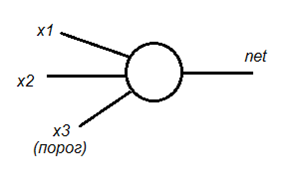
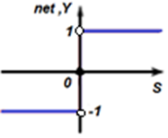
Примем случайным образом настройку сети: её веса связей (k1, k2, k3), например, k1 = 0.75, k2 = 0.5, k3 = - 0.6. Примем шаг обучения C=0.2.
Примечание. Теории выбора наилучшего значения шага обучения не существует. Подбор величины шага (увеличение или уменьшение по ходу расчета) осуществляется подбором по виду функции ошибок.
Эпохой назовём процесс обучения сети всем доступным примерам по одному разу. Эпохи повторяются циклически до тех пор, пока сеть не перестаёт ошибаться. Ошибкой сети считается несовпадение ответа сети с предполагаемым ответом человека-эксперта. Эпоха состоит из итераций. Одна итерация соответствует обучению один раз одному примеру из таблицы экспериментов.
Эпоха 1. Итерация 1.
На первый пример из первой строки таблицы (x1=1, x2=1, x3=1) при таких настройках весов связей (k1= 0.75, k2= 0.5, k3= -0.6) сеть вычислит S = 0.75*1+0.5*1+(-0.6)*1 = 0.65. Далее, ответ сети net=sign(S) = sign(0.65) = 1. И эксперт ожидал от сети на эти значения X тот же ответ: Y=1. То есть ответы эксперта и сети совпали: net=Y. Значит, переобучать сеть не надо. Вектор весов связей остался прежним (k1= 0.75, k2= 0.5, k3= -0.6).
Итерация 2.
На второй пример из второй строки таблицы (x1=9.4, x2=6.4, x3=1) при таких настройках весов связей (k1=0.75, k2=0.5, k3= -0.6) сеть вычислит: S = 0.75*9.4+0.5*6.4+(-0.6)*1 = 9.65. И далее: net=sign(S) = sign(9.65) = 1. А эксперт ожидал от сети на эти значения X другой ответ: Y = -1. То есть ответы эксперта и сети НЕ совпали. Значит, надо переобучать сеть.
Обучение сети идет по «дельта-правилу»: dk := C*(Y-net)*X , kновое := kстарое + dk. Или подставляя: kновое := kстарое + C*(Y-net)*X.
Здесь dk – изменение значений вектора k (весов связей), C – шаг обучения, X – вектор значений состояний (сигналов). Приняли, С=0.2. Итак, dk1 = 0.2*((-1) - 1) * 9.4 = - 3.76, k1новое := k1старое + dk1 = 0.75 - 3.76 = -3.01. То есть вес первой связи стал k1новое := - 3.01. Связь вместо возбуждающей, стала тормозной, так как сеть слишком оптимистично отреагировала на значения первого примера. На ситуацию Y=-1 (опасно) сеть сгенерировала ответ net=1 (безопасно) и ошиблась. Сейчас она корректирует веса связей.
Продолжаем, dk2 = 0.2*((-1) - 1) * 6.4 = - 2.56, k2новое := k2 старое + dk2 = 0.5 - 2.56 = -2.06.
То есть вес второй связи теперь k2новое := - 2.06.
И еще раз, dk3 = 0.2*((-1) - 1) * 1 = - 0.4, k3 новое := k3 старое + dk3 = -0.6 - 0.4 = -1.
То есть вес третьей связи стал k3 новое := - 1.
Вектор весов связей на второй итерации изменился и будет теперь другим (k1=-3.01, k2=-2.06, k3=-1).
Итерация 3.
На третий пример из третьей строки таблицы (x1=2.5, x2=2.1, x3=1) при новых настройках весов связей (k1=-3.01, k2=-2.06, k3=-1) сеть вычислит
S = (-3.01)*2.5+(-2.06)*2.1+(-1)*1 = -12.84. И далее ответит:
net = sign(S) = sign(-12.84) = -1. А эксперт ожидал от сети на эти значения X другой
ответ: Y=1. Так как ответы эксперта и сети НЕ совпали, то сеть надо снова переобучать.
Обучение сети идёт по «дельта-правилу».
dk1 = 0.2*(1-(-1)) * 2.5 = 1, k1новое := k1старое + dk1 = -3.01+1= -2.01.
То есть вес первой связи стал k1новое := - 2.01.
Продолжаем, dk2 = 0.2*(1-(-1)) * 2.1 = 0.84, k2новое := k2старое + dk2 = - 2.06 + 0.84 = -1.22.
И еще раз, dk3 = 0.2*(1-(-1)) * 1 = 0.4, k3новое := k3старое + dk3 = -1+ 0.4 = -0.6.
Вектор весов связей снова изменился и стал (k1= -2.01, k2= -1.22, k3= -0.6).
Сеть на втором примере «погорячилась», слишком сильно затормозила связи и теперь откатывает решение назад.
Далее аналогично вычисляем изменения весов связей, рассматривая последовательно примеры из остальных семи строк таблицы. Так как после 10 шагов (10 строк таблицы, 10 примеров) выяснится, что сеть перестраивалась 6 раз (допустила шесть ошибок), то надо провести эпоху 2, рассчитывая снова примеры от 1 до 10 с новыми (k1, k2, k3), продолжая менять их значения.
| Номера итераций, изменивших веса связей | Веса связей | ||
|---|---|---|---|
| k1 | k2 | k3 | |
| Старт | 0.75 | 0.5 | -0.6 |
| 2 | -3.01 | -2.06 | -1 |
| 3 | -2.01 | -1.22 | -0.6 |
| 5 | -1.81 | -0.34 | -0.2 |
| 8 | -0.69 | -0.02 | 0.2 |
| 9 | -0.21 | 1.18 | 5.6 |
| 10 | -3.33 | -1.26 | 0.2 |
| Количество ошибок сети в эпохе 1: Е=6 | |||
Вычисляя значения весов связей нейрона, можно одновременно геометрически проиллюстрировать пространство входных и выходных сигналов в осях (х1,х2). Посмотрим это на примере итерации 2 эпохи 1.
| Пример | k1 | k2 | k3 |
|---|---|---|---|
| 2 | -3.01 | -2.06 | -1 |
Очевидно, что уравнение -3.01*х1-2.06*х2-1=0, которое получилось в её результате, представляет собой прямую линию, которая делит пространство (x1 - температура, x2 – вибрация, х3 – порог в уравнении нейрона: k1*x1+k2*x2+k3*x3=0, x3=1) на две части:
-3.01*х1-2.06*х2-1>0, так как sign(S)=1, и
-3.01*х1-2.06*х2-1<0, так как sign(S)=-1.
Одна часть полупространства соответствует безопасным (Y>0) условиям эксплуатации двигателя (пары x1 и x2), вторая – опасным (Y<0). На рисунке показана эта прямая линия -3.01*х1-2.06*х2-1=0 под номером 2.
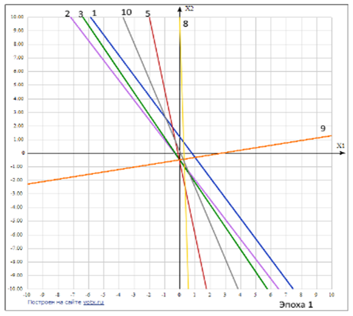
По мере обучения нейросети значения коэффициентов её связей меняются. Значит, меняется и положение прямой линии. Она вращается и смещается. На рисунке видны изменения положения прямой во время эпохи 1, соответствующие примерам 1,2,3,5,8,9,10.
Поскольку сеть ошибается (6 ошибок за эпоху 1), то её продолжают обучать, прогоняя ещё раз все примеры заново с уже скорректированными значениями коэффициентов связей во время эпохи 2.
Повторение эпох происходит до тех пор, пока сеть не обучится. Признаком обученности сети является факт отсутствия изменений значений вектора весов связей (k1,k2,k3) при проверке всех десяти примеров таблицы. Количество ошибок E сети должно постепенно уменьшаться и достигнуть значения нуля.
Признак о постепенном обучении работает, если параметры обучения выбраны удачно.
Однако следует иметь в виду. Если шаг обучения С большой, то сеть начнёт разбалтываться. В этом случае количество ошибок от эпохи к эпохе не уменьшается, а остаётся постоянным или увеличивается. При этом ошибки появляются всё время в разных примерах (эффект «то это помним, то другое»). Кривая ошибок колеблется вверх-вниз и не идёт монотонно вниз.
Если значение шага обучения С слишком малО, то сеть обучается слишком медленно. Ей приходится многократно повторять одни и те же примеры, чтобы она сменила реакцию на них с неправильной на правильную. Кривая ошибок падает, но медленно. Шаг обучения С играет роль коэффициента темперамента.
В таблицах показаны промежуточные результаты расчёта. Всего сеть сделала 19 ошибок за всё время обучения, при этом количество ошибок от эпохи к эпохе снижалось по мере того, как сеть обучалась.
На рисунках показано как изменяется линия «модель нейрона» в процессе расчёта (обучения), то есть перестройки весов связей (меняется наклон и смещение линии). Номер линии указывает на номер примера в базе данных. Оси координат – входные сигналы (рецепторы).
| Номер эпохи | Расчет значений коэффициента связей нейросети | Положение разделяющего правила нейрона во время прохождения обучения | |||||||||||||||||||||||||||||||||||
|---|---|---|---|---|---|---|---|---|---|---|---|---|---|---|---|---|---|---|---|---|---|---|---|---|---|---|---|---|---|---|---|---|---|---|---|---|---|
| 2 |
|
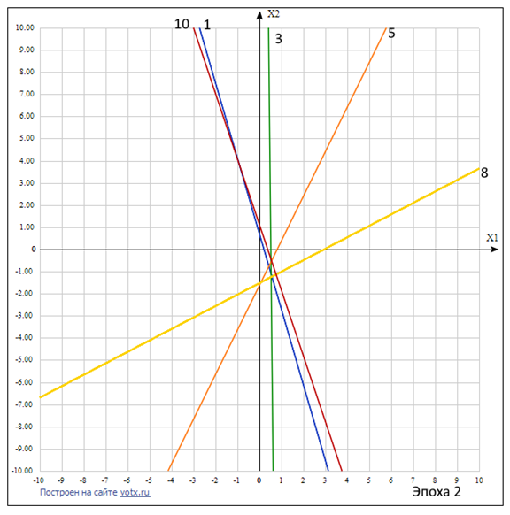 |
|||||||||||||||||||||||||||||||||||
| 3 |
|
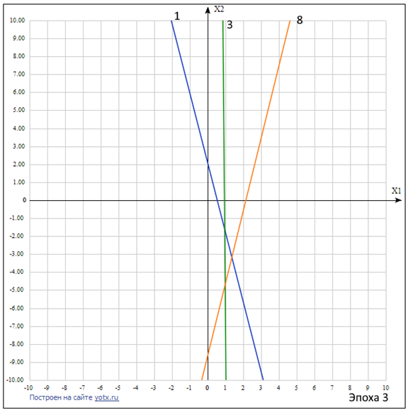 |
|||||||||||||||||||||||||||||||||||
| 4 |
|
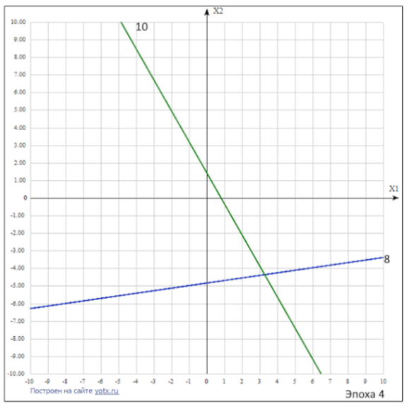 |
|||||||||||||||||||||||||||||||||||
| 5 |
|
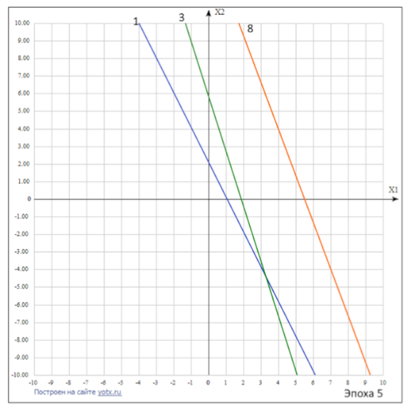 |
|||||||||||||||||||||||||||||||||||
| 6 |
|
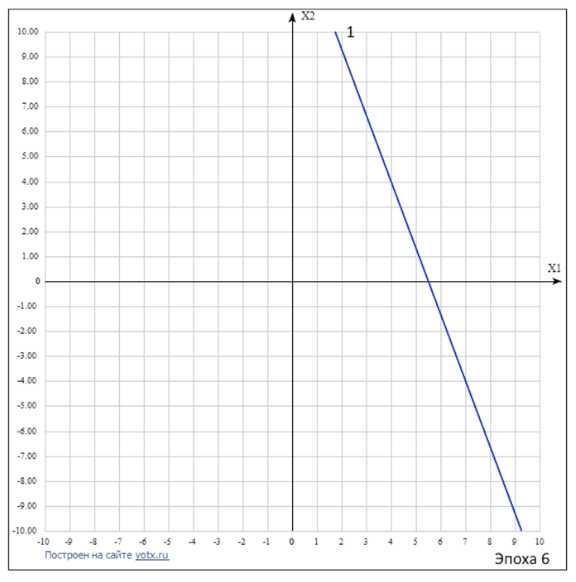 |
|||||||||||||||||||||||||||||||||||
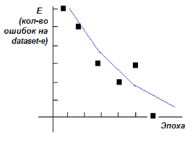
Ответ задачи: S = -0.69*х1-0.26*х2+3.8 при S>0, S<0, S=0
Y = sign(-0.69*х1-0.26*х2+3.8) при Y=-1, Y=0, Y=+1
или в терминах предметной области (математическая модель):
Опасность = sign(-0.69*Температура – 0.26*Вибрация + 3.8)
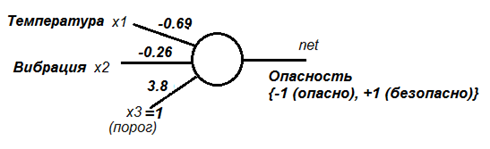
Примечание. Появление веса связи нейрона, отличного от 1, означает, что на деле у реального нейрона прорастут дополнительные отростки-связи. Две следующие схемы эквивалентны, а порог внутри нейрона равен 0. Дробные веса связей, например, {-0.69, -0.26 и 3.80} означают, что у нейрона вырастет {69, 26, 380} отростков у соответствующих связей. Отрицательные веса – связь будет тормозящей, положительные – связь будет возбуждающей.
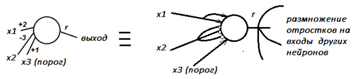
Геометрическая интерпретация результата
При Y=0 имеем -0.69*х1-0.26*х2+3.8 = 0 или х2 = 14.6*x1 - 2.65 – разделяющее правило.
Строим график прямой линии в осях {x1, x2} и в поле устанавливаем точки-примеры, они же экземпляры классов.
Обозначаем классы: Y=1 (безопасно) и Y=-1 (опасно). Видно, что примеры опасной работы двигателя (2,4,6,7,10) из таблицы оказались по одну сторону от разделяющего правила, а примеры безопасной работы (1,3,5,8,9) – по другую. Ошибок нет. Сеть настроена.
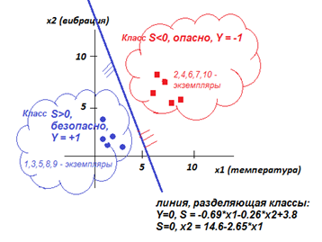
Задания
- Обучите сеть с другим начальным вектором значений весов связей k, с этим или другим значением шага С. Найдите окончательный вид вектора (k1, k2, k3). Приведите в тетради промежуточные его значения на шагах и эпохах. Подсчитайте количество ошибок Е (перестроек) сети в каждую эпоху. Нарисуйте график количества ошибок E от номера эпохи. Нарисуйте в осях (X1, X2) график S(X1, X2). По координатам (X1, X2) нанесите положение 10 точек из таблицы. Посмотрите, как расположилась прямая линия S=0 относительно точек. Выпишите математическую модель, выведенную сетью.
- Постройте свой пример и обучите ему свою сеть.
ВЫВОД: В процессе обучения нейросети линия, разделяющая классы, смещалась и вращалась в пространстве рецепторов до тех пор пока не установилась так, чтобы разделить по одну её сторону (полуплоскость) экземпляры одного класса, а по другую – второго класса. Таким образом сеть научилась отличать одни ситуации от других. Один нейрон определяет одно уравнение модели. Модель позволяет в дальнейшем формировать правильную реакцию нейронной сети на новые незнакомые случаи.
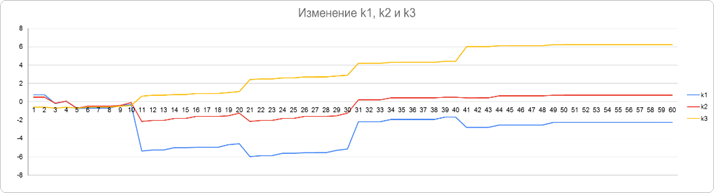
Если нейронная сеть имеет в своем составе не один, а несколько слоев, настраивают значения коэффициентов связей, начиная с последнего слоя и постепенно двигаясь по слоям от конца к началу. Настройка сети осуществляется алгоритмом обратного распространения волны.
Достоинства нейронной сети (перцептрона)
- Перцептрон не знает, как он это делает, но он это делает.
- Перцептрон решает любую задачу одним и тем же методом.
- Метод крайне прост.
- Перцептрон может переучиться, если мир изменится.
- Перцептрон находит модель, а не запоминает конкретные случаи (таблицу данных), обобщая первичную информацию до уравнения.
- Перцептрон может на основании построенной им модели отвечать на новые вопросы и порождать новые данные, а не только воспроизводить данные, на которых он обучался.
- В основе перцептрона лежит естественная простая парадигма: «За правильное поощряют, за неверное – наказывают», «Повторение – мать учения».
- Перцептрон строит модель окружающего мира. Модель может слегка отличаться от модели реального мира. Перцептрон реализует свое поведение с определённой точностью.
- Перцептрон строит модель окружающего мира. Модель может слегка отличаться от модели реального мира. Перцептрон реализует свое поведение с определённой точностью. Отличие модели мира от модели мира, построенной перцептроном, может быть количественно оценена.
- Перцептрон строит гипертело в гиперпространстве рецепторов. Нейроны – это гиперплоскости, разделяющие гиперпространство рецепторов на области-классы. Примеры – это экземпляры класса, точки в гиперпространстве. Гипертело – смысл. Построение гипертела – процесс понимания свойств и устройства мира.
- Мозг устроен просто (сложение, умножение и простейшая нелинейность в виде функции Хэвисайда), а ведёт себя сложно. Мозг осуществляет сдвиг и вращение гиперплоскостей и логические функции с гипертелами. В структурах с обратной связью также реализуется запоминание.
- Сеть нейронов представляет собой операцию скалярного умножения вектора входных сигналов и вектора весов нейросети. По определению, скалярное произведение двух векторов
Х и К – косинус между векторами сигналов мира X и состояния обучаемого K, мера
похожести Х и К.
- Нейросеть – это система, то есть структура, содержащая элементы Х и связи К, демонстрирующая новые свойства, отличные от свойств составляющих её элементов. Свойством здесь является гипертело, которое образуется уравнениями (неравенствами) нейронов-элементов.
- Традиционные определения новых свойств, абстракций, на основе базовых свойств обычно неточны, так как по сравнению с построенными нейросетью восприятиями и новыми понятиями образуют гипертела только перпендикулярными и параллельными к осям системы координат гиперплоскостями.
- Память интеллектуальной системы выражается весом связей между понятиями и представляет собой систему уравнений окружающего мира. Информация – это связи. Связи – это информация. Связь характеризуется числом, которое является сомножителем между источником и приёмником информации. Информация второго уровня – это отношения между связями нейрона.
- Связи перцептрона можно отразить матрицей. Знания о мире в конечном итоге представляются матрицей. С матрицами возможны операции. Геометрический образ матрицы – гипертело.
- Перцептрон устойчив к повреждениям, так как умеет доучиваться и переучиваться после того, как часть нейронов вышла из строя или если среда изменила свои правила.
- В скрытых (внутренних) слоях перцептрона скрывается обобщение.
- Чем больше знает перцептрон, тем легче ему решить новую незнакомую задачу. Знания - это правильно настроенная матрица, гипертело, которое соответствует правильно построенной системе уравнений.
- Знания – это модели, а не данные. Модели – это уравнения. Алгоритмы – это суть описание процесса решения задач, траектории перехода от известных величин к неизвестным. Алгоритм имеет меньшую ценность, нежели модель. Модель порождает алгоритмы – последовательность действий, приводящую к ответу на вопрос, решению. Перцептрон создает программы решения задач, но сам является моделью окружающего мира, которую сам и создает.
- Много ошибок – процесс обучения идет быстро. Мало ошибок – процесс усвоения деталей замедляется.
- Перцептрон имитирует человеческую мыслительную деятельность, которая появилась эволюционно.
Презентация:
| Лекция 42. Динамические нейросети. Сети с памятью | Лекция 44. На что способны нейронные сети | ||||||||||||||||
|
|||||||||||||||||